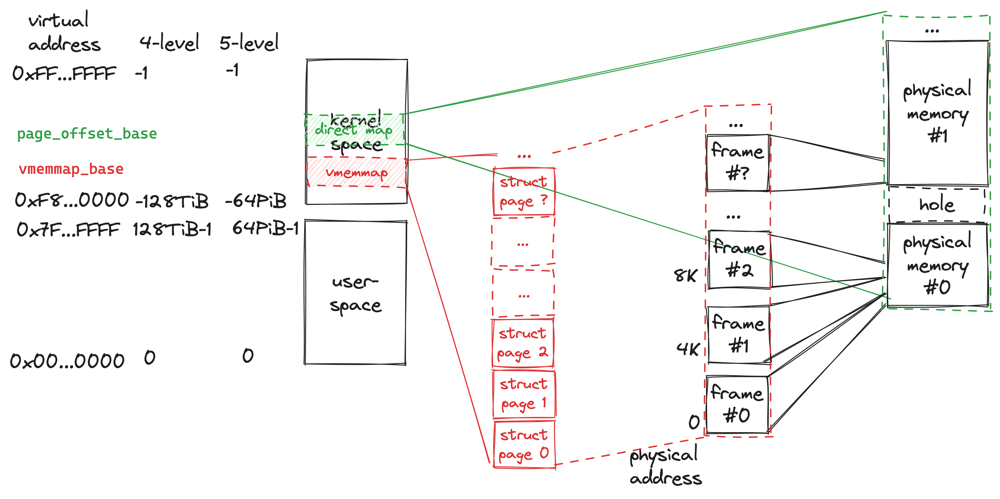

How can we read/write to arbitrary memory in kernel space when we only have a struct page?
Linux maps all physical memory into kernel space starting at virtual address PAGE_OFFSET.
To access arbitrary memory via a struct page,
we can just get the kernel virtual address by
adding the physical address of that page to PAGE_OFFSET.
This is also the underlying mechanism used by kmap(),
which returns an accessible kernel virtual adddress for the given struct page.
Now you might ask how can I get the physical address from a struct page?
It's easy, all struct pages are stored as a C array struct page *vmemmap.
The array starts at virtual address vmemmap_base.
The array index is pfn, i.e. page frame number.
Now we have another problem, what if there are big holes between physical memory?
Dose that means memory wastage because lots of struct pages in that array are pointless?
The answer is negative.
The physical memory backing the vmemmap array is actually sparsely allocated,
i.e. only those meaningful struct pages have physical memory backing them.
This problem is taken care of in the initialization of the vmemmap,
i.e. the vmemmap_populate() function.

References: